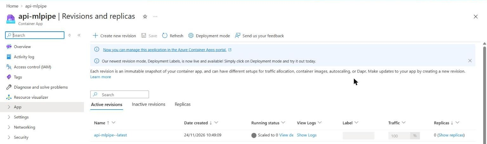
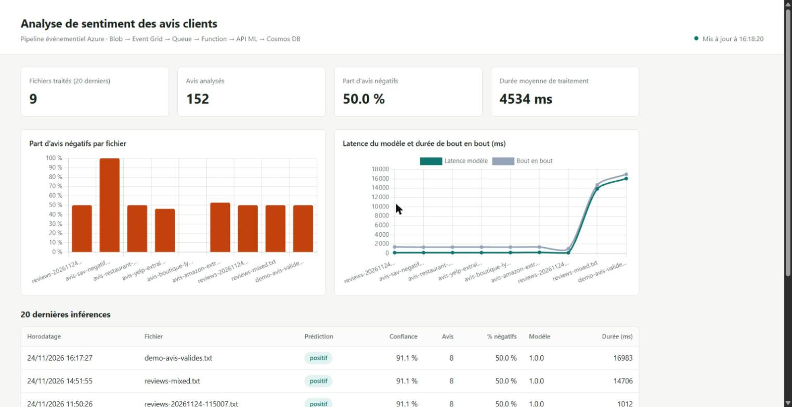
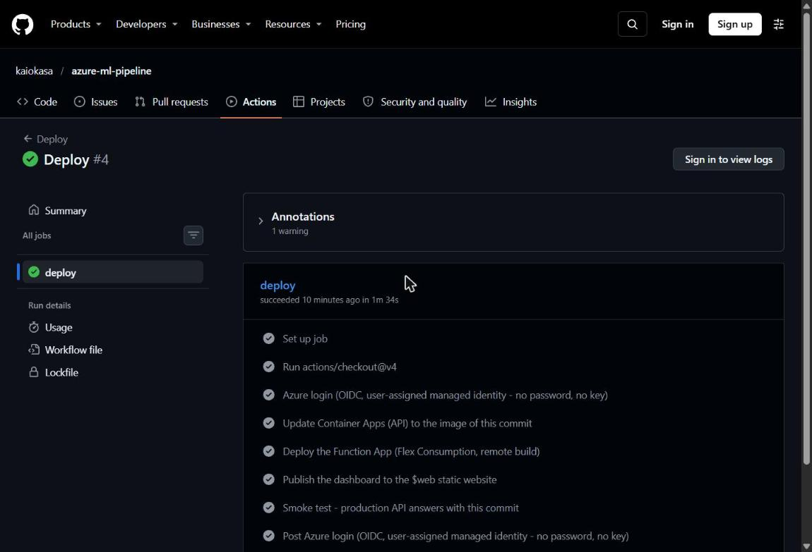
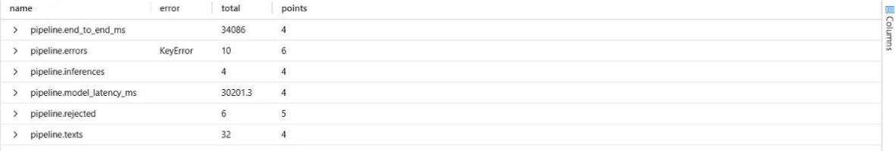
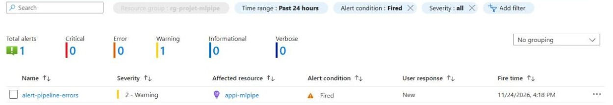
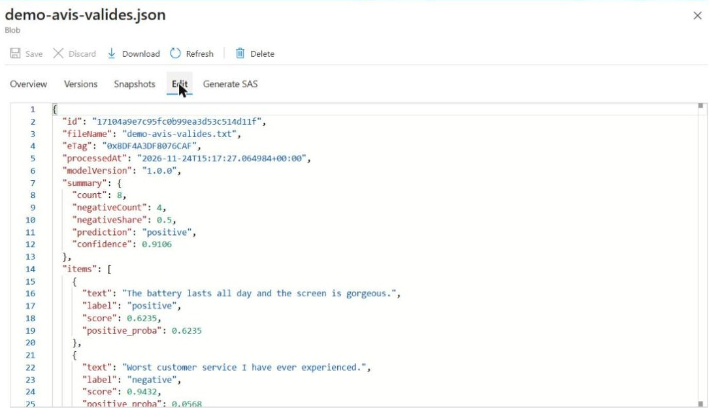
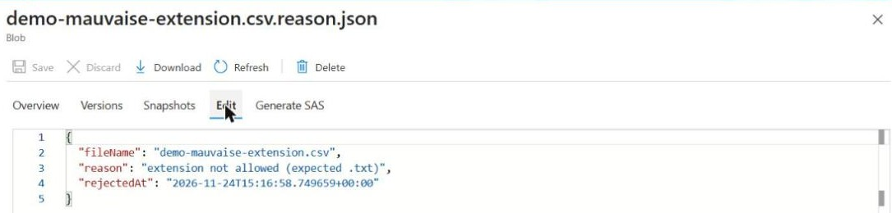
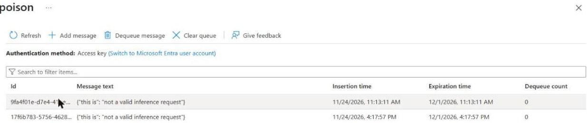
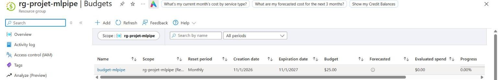

| Ce qui s’est passé | Cause | Correction |
|---|---|---|
| Connexion à Azure refusée | Double authentification obligatoire | Connexion ciblée sur le bon annuaire, dans le navigateur |
| Premier déploiement refusé par Azure | GitHub envoie son identité avec des numéros de compte | Seconde règle de confiance OIDC, ajoutée aussi aux scripts |
| Mise à jour de l’API refusée | Environnement Container Apps simplifié | Option retirée ; la version est vérifiée par /version |
| Tableau de bord sans données | Adresse des Functions lue au mauvais endroit | Lecture corrigée, contrôle ajouté au déploiement |
| Métriques manquantes | Instance mise en pause avant l’envoi | Envoi forcé à la fin de chaque traitement |
| Déploiement sans image | Commit de documentation non construit | Le déploiement reprend la dernière image construite |
ECE Paris · Systèmes distribués et IA
Pipeline de Machine Learning
événementiel sur Azure
Analyse de sentiment d’avis clients, du dépôt d’un fichier jusqu’au tableau de bord, dans un compte Azure for Students.
Équipe mlpipeOmar BOUCHENTOUF, Mohamed JOURFI
Anas, Cherif
EncadranteDr. BENNAI Soufia
Code sourcegithub.com/kaiokasa/azure-ml-pipeline
Pipeline ML événementiel sur Azure
On dépose un fichier d’avis : moins d’une minute plus tard, chaque avis est classé et affiché
Pipeline ML événementiel sur Azure
Nous avons construit le projet en dix étapes, dans cet ordre
1Cadrage : cas d’usage et règles du jeu
6Azure : région, ressources, contraintes
2Modèle : données, entraînement, métriques
7CI/CD : tester puis déployer sans secret
3API : servir le modèle dans un conteneur
8Mesures : métriques, requêtes, alerte
4Pipeline : de l’événement au résultat
9Démonstration : trois scénarios réels
5Tableau de bord : stocker et afficher
10Bonus : test de charge et Bicep
Pipeline ML événementiel sur Azure
1
Cadrage
Un cas d’usage simple à valider et à lire, dans un budget de 25 $.
Ce que nous avons fait
- Lu le sujet et ses limites : compte Azure for Students, 25 $ au maximum, aucune machine virtuelle ni GPU.
- Choisi l’analyse de sentiment d’avis clients : chaque ligne d’un fichier devient positive ou négative.
- Fixé ce qu’est un fichier valide :
.txt, 1 Mo au plus, de 1 à 500 lignes. - Organisé le dépôt GitHub :
model/,api/,functions/,web/,infra/,docs/.
Pourquoi ce choix
LégerUn modèle de 1,1 Mo qui répond en quelques millisecondes sur un simple processeur.
VérifiableUn fichier texte se valide facilement : extension, taille, encodage, nombre de lignes.
Lisible« 50 % d’avis négatifs » se comprend tout de suite sur un tableau de bord.
Pipeline ML événementiel sur Azure
2
Le modèle
86 % de bonnes réponses sur des phrases jamais vues, contre 50 % pour un modèle naïf.
Ce que nous avons fait
- Récupéré le jeu de données UCI Sentiment Labelled Sentences : 3 000 phrases d’Amazon, Yelp et IMDb, licence CC BY 4.0.
- Mis de côté 20 % des phrases (600) pour le test, avec une graine fixe pour pouvoir refaire l’expérience.
- Entraîné une régression logistique sur la fréquence des mots et des groupes de lettres (TF-IDF).
- Comparé le résultat à un modèle naïf qui répond toujours la même classe.
- Enregistré le modèle versionné
model-1.0.0.joblib.
Résultat sur les 600 phrases de test
| Métrique | Notre modèle | Modèle naïf |
|---|---|---|
| Accuracy | 0,860 | 0,500 |
| F1 (classe positive) | 0,862 | 0,000 |
| ROC AUC | 0,924 | 0,500 |
Taille 1,1 Mo et 46 ms pour 500 lignes, loin des limites du sujet (100 Mo et 1 s).
Pipeline ML événementiel sur Azure
3
L’API d’inférence
Le modèle répond sur Internet et ne coûte rien quand personne ne l’appelle.
Ce que nous avons fait
- Écrit l’API FastAPI :
/health,/version,/predict,/metrics. - Écrit 24 tests automatiques : réponse correcte, entrée invalide (erreur 422), requête vide.
- Emballé l’API dans une image Docker d’environ 380 Mo, qui tourne sans droits administrateur.
- Déployé l’image dans Azure Container Apps : 0,25 processeur, 0,5 Go de mémoire, de 0 à 2 copies selon le trafic.

Pipeline ML événementiel sur Azure
4
Le pipeline événementiel
Aucun fichier perdu, aucun fichier traité deux fois.
Ce que nous avons fait
- Branché Event Grid sur le dossier
input/: chaque nouveau fichier déclenche le dispatcher. - Le dispatcher valide le fichier ; s’il est invalide, il le copie dans
rejected/avec le motif. - Un fichier valide devient un message dans une file d’attente.
- Le worker lit la file, appelle l’API et enregistre le résultat.
- Les trois fonctions tournent dans une seule Function App, sans aucune clé : elles s’identifient par identité managée.
Les garanties
| Problème | Réponse |
|---|---|
| L’API est lente ou en panne | Le message attend dans la file : rien n’est perdu. |
| Une erreur passagère | 5 nouvelles tentatives, à 10 s d’intervalle. |
| Un message impossible à traiter | Après 5 échecs, il part dans la file « poison » pour analyse. |
| Le même événement reçu deux fois | Un identifiant (nom du fichier + version ETag) évite le doublon. |
Pipeline ML événementiel sur Azure
5
Stockage et tableau de bord
Chaque fichier traité apparaît tout seul à l’écran, sans action manuelle.
Ce que nous avons fait
- Enregistré le résultat complet de chaque fichier en JSON dans
output/. - Enregistré un résumé par fichier dans Cosmos DB, en offre gratuite.
- Ajouté la fonction
/api/recent: les 20 derniers résultats, lisibles seulement depuis notre site. - Publié une page web avec un tableau et deux graphiques, actualisée toutes les 30 s.

Pipeline ML événementiel sur Azure
6
L’infrastructure Azure
Chaque limite du compte étudiant a imposé un choix précis.
Ce que nous avons fait
- Relevé les 5 régions autorisées et retenu germanywestcentral : autorisée, compatible avec Functions Flex, et Cosmos DB y a été accepté du premier coup.
- Créé Cosmos DB en premier, car c’est le service le plus souvent refusé.
- Créé tout le reste avec un script commenté,
01-setup.sh. - Accordé les droits une seule fois, avec
02-roles.sh.
Limite du compte et notre solution
| Limite du compte | Notre solution |
|---|---|
| Pas de droits d’administration | Identité managée et connexion OIDC depuis GitHub |
| Registre ACR indisponible | Image publiée sur GitHub Container Registry, gratuit |
| Static Web Apps hors région | Site web statique dans le stockage Blob |
| Un seul environnement Container Apps | Un seul environnement, partagé |
| Crédit de 100 $ partagé entre les cours | Budget de 25 $ avec alertes, journaux plafonnés à 0,2 Go par jour |
Pipeline ML événementiel sur Azure
7
Intégration et déploiement continus
Chaque modification est testée, puis déployée après accord, sans aucun mot de passe stocké.
Ce que nous avons fait
- Workflow
ci.yml: vérification du style, 24 tests, construction et publication de l’image. - Workflow
deploy.yml: GitHub se connecte à Azure par OIDC, sans clé ni mot de passe. - Environnement
production: un membre de l’équipe doit approuver chaque déploiement. - Dernière vérification automatique :
/versiondoit renvoyer le commit déployé.

Pipeline ML événementiel sur Azure
8
Mesurer et alerter
Une erreur dans le pipeline déclenche un e-mail en moins de 15 minutes.
Ce que nous avons fait
- Envoyé les traces de l’API et des fonctions vers Application Insights (OpenTelemetry).
- Créé 7 métriques : fichiers traités, avis, latence, erreurs, rejets…
- Écrit 3 requêtes KQL : traitements par heure, 5 fichiers les plus lents, codes HTTP.
- Configuré une alerte, vérifiée toutes les 15 min, qui envoie un e-mail en cas d’erreur.


Pipeline ML événementiel sur Azure
9
La démonstration
Le 24 novembre à 16:16:58, trois dépôts : les trois chemins ont fonctionné.
Fichier valide

Fichier invalide

.csv est copié dans rejected/ avec son motif : extension non autorisée.Message malformé

Pipeline ML événementiel sur Azure
10
Les deux bonus
Le système tient une rafale de 100 fichiers et se reconstruit en une commande.
Test de charge
100 / 100fichiers (5 000 avis) traités environ 32 s après le premier dépôt, sans erreur ni doublon.
21 + 8copies du dispatcher et du worker, ajoutées automatiquement par Azure.
6 mstemps de réponse médian de l’API sous 20 utilisateurs simultanés (1 632 requêtes, aucun échec).
Infrastructure décrite en code (Bicep)
29ressources Azure décrites dans un seul fichier,
main.bicep.0 / 0ressource à créer ou à supprimer : le fichier décrit exactement ce qui tourne.
2 minpour tout redéployer avec
infra/bicep/deploy.sh, pipeline retesté juste après.Pipeline ML événementiel sur Azure
Six obstacles réels, six corrections
Chacun est documenté dans le README, avec sa solution.
Pipeline ML événementiel sur Azure
Environ 0,35 $ estimés pour 15 jours, sur 25 $ autorisés
| Poste | Estimation |
|---|---|
| Functions, Container Apps, Event Grid, Cosmos DB, journaux | 0,00 $ |
| Stockage des fichiers et des files | 0,10 $ |
| Alerte vérifiée toutes les 15 min | 0,25 $ |
| Total estimé | 0,35 $ |
Les services restent dans leur offre gratuite grâce à trois choix : API à 0 copie au repos, Cosmos DB en offre gratuite, image sur GitHub plutôt que dans un registre payant. Le coût réel sera relevé au 15e jour, et tout sera supprimé dans les 48 h qui suivent la soutenance.

Pipeline ML événementiel sur Azure
Tout le socle fonctionne, avec deux bonus
Livré
- Modèle versionné et API qui redescend à 0 copie
- Pipeline avec validation, file, reprises et file « poison »
- Cosmos DB et tableau de bord automatique
- Métriques, requêtes KQL, alerte déclenchée
- Déploiement continu sans secret, avec approbation
- Bonus : test de charge et infrastructure en Bicep
Ce qui reste
- Relever le coût réel au 15e jour
- Tout supprimer dans les 48 h après la soutenance, captures à l’appui
Merci. Vos questions ?